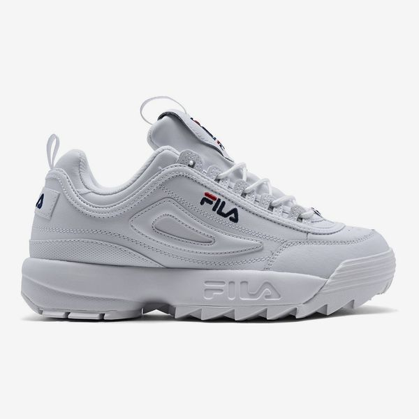

Case Study Between Google Lens And Mobile Lens
Google Lens
vs
MobileNet
-
Test Image -

Output on Google Lens
Output on Mobilenet Model
Result -
Draw
-
Test Image -

Output on Google Lens - Shoes
Output on Mobilenet Model - Yeezez
Result -
Google Lens is more accurate
-
Test Image -

Output on Google Lens - headphones
Output on Mobilenet Model - gucci headphones
Result -
Google Lens is more accurate
-
Test Image -

Output on Google Lens - Amongus
Output on Mobilenet Model - Amigos
Result -
Google Lens is more accurate
-
Test Image -
Output on Google Lens - small bedroom
Output on Mobilenet Model - giant bedroom
Result -
Google Lens is more accurate
I have tested 5 images and Google Lens is more accurate. And Mobilenet is less accurate So according to my case study Google Lens is more accurate